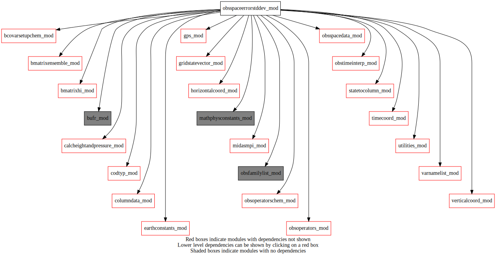
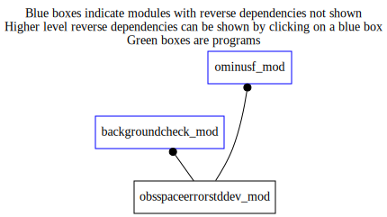

Dependency Diagrams:
 Direct Dependency Diagram¶
 Reverse Dependency Diagram¶
Description
MODULE obsSpaceErrorStdDev_mod (prefix=’ose’ category=’1. High-level functionality’)
- Purpose
Contains subroutines for computing background-error and OmP-error standard deviations in observation space
Quick access
- Routines
ose_calcompstddevch(),ose_compute_hbht_ensemble(),ose_compute_hbht_static(),ose_compute_hbht_static_chem(),ose_computestddev(),ose_deallocompstddevch(),ose_fillompstddevch(),ose_getompstddevch(),ose_ompstddevexistsforallch(),ose_readompstddev_auxfilech(),ose_setompstddevch(),ose_setstaticerrorstddev(),setfgedif(),setfgefam(),setfgefamz(),setfgegps(),setfgesurf(),setfgett()Needed modules
midasmpi_mod: MODULE midasMpi_mod (prefix=’mmpi’ category=’8. Low-level utilities and constants’)
obsspacedata_mod: MODULE obsSpaceData_mod (prefix=’obs’ category=’6. High-level data objects’)
columndata_mod: MODULE columnData_mod (prefix=’col’ category=’6. High-level data objects’)
bufr_mod: MODULE bufr_mod (prefix=’bufr’ category=’8. Low-level utilities and constants’)
utilities_mod: MODULE utilities_mod (prefix=’utl’ category=’8. Low-level utilities and constants’)
earthconstants_mod: MODULE earthConstants_mod (prefix=’ec’ category=’8. Low-level utilities and constants’) Prefixes: ec_ (Earth constants), for miscellaneous values from diverse sources
mathphysconstants_mod: MODULE MathPhysConstants_mod (prefix=’mpc’ category=’8. Low-level utilities and constants’)
statetocolumn_mod: MODULE stateToColumn (prefix=’s2c’ category=’4. Data Object transformations’)
gridstatevector_mod: MODULE gridStateVector_mod (prefix=’gsv’ category=’6. High-level data objects’)
verticalcoord_mod: MODULE verticalcoord (prefix=’vco’ category=’7. Low-level data objects’)
horizontalcoord_mod: MODULE HorizontalCoord_mod (prefix=’hco’ category=’7. Low-level data objects’)
bmatrixhi_mod: MODULE BmatrixHI_mod (prefix=’bhi’ category=’2. B and R matrices’)
obsoperators_mod: MODULE obsOperators_mod (prefix=’oop’ category=’5. Observation operators’)
gps_mod: MODULE gps_mod (prefix=’gps’ category=’5. Observation operators’)
codtyp_mod: MODULE codtyp_mod (prefix=’codtyp’ category=’8. Low-level utilities and constants’)
bcovarsetupchem_mod: MODULE BCovarSetupChem_mod (prefix=’bcsc’ category=’6. High-level data objects’)
timecoord_mod: MODULE timeCoord (prefix=’tim’ category=’7. Low-level data objects’)
obstimeinterp_mod: MODULE obsTimeInterp_mod (prefix=’oti’ category=’4. Data Object transformations’)
bmatrixensemble_mod: MODULE BmatrixEnsemble_mod (prefix=’ben’ category=’2. B and R matrices’)
varnamelist_mod: MODULE varNameList (prefix=’vnl’ category=’7. Low-level data objects’)
obsoperatorschem_mod: MODULE obsOperatorsChem_mod (prefix=’oopc’ category=’5. Observation operators’)
obsfamilylist_mod: MODULE varNameList (prefix=’ofl’ category=’7. Low-level data objects’)
calcheightandpressure_mod: MODULE czp_calcHeightAndPressure (prefix=’czp’ category=’4. Data Object transformations’)Types
- type obsspaceerrorstddev_mod/unknown_type¶
- Type fields
% element (*) [integer ,allocatable]
% ibegin (*) [integer ,allocatable]
% lat (*) [real ,allocatable]
% levels (*) [real ,allocatable]
% month (*) [real ,allocatable]
% n_lat (*) [integer ,allocatable]
% n_lvl (*) [integer ,allocatable]
% n_month (*) [integer ,allocatable]
% n_stnid [integer ]
% source (*) [integer ,allocatable]
% std (*) [real ,allocatable]
% std_type (*) [integer ,allocatable]
% stnids (*) [character ,allocatable]
Variables
Subroutines and functions
- subroutine obsspaceerrorstddev_mod/ose_computestddev(columntrlonanlinclev, hco_anl_in, obsspacedata)¶
- Purpose
To set OmP-error std dev when possible. Otherwise compute background-error stddev in observation space to estimate OmP-error std dev.
- Arguments
columntrlonanlinclev [struct_columndata ] :: Columns of the background interpolated to analysis levels and to obs horizontal locations
hco_anl_in [struct_hco ,pointer]
obsspacedata [struct_obs ] :: Observation-related data
- Called from
- Call to
obs_numheader(),ose_setstaticerrorstddev(),ose_compute_hbht_ensemble(),utl_abort(),obs_numbody(),obs_bodyelem_r()
- subroutine obsspaceerrorstddev_mod/ose_setstaticerrorstddev(columntrlonanlinclev, obsspacedata, statushbht, statushbht_ch, statusompe_ch)¶
- Purpose
To assign or compute the OmP error standard deviations in observation space where requested. If not possible or available, compute background-error standard deviation.
- Note
OmP error std dev assigment currently only available for the CH obs family.
- Arguments
columntrlonanlinclev [struct_columndata ]
obsspacedata [struct_obs ] :: observation-space data, output saved in OBS_HPHT column
statushbht [logical ,inout]
statushbht_ch [logical ,inout]
statusompe_ch [logical ,inout]
- Called from
- Call to
obs_famexist(),ose_setompstddevch(),ose_compute_hbht_static(),ose_compute_hbht_static_chem()
- subroutine obsspaceerrorstddev_mod/ose_compute_hbht_static(columntrlonanlinclev, lobsspacedata, active)¶
- Purpose
To compute background-error stddev in observation space using fixed statistics specific in stats file.
- Arguments
columntrlonanlinclev [struct_columndata ]
lobsspacedata [struct_obs ]
active [logical ]
- Called from
- Call to
col_getvco(),bhi_setup(),col_getnumlev(),bhi_getscalefactor(),utl_abort(),gsv_allocate(),gsv_zero(),col_setvco(),col_allocate(),col_getnumcol(),oop_vobslyrs(),utl_fstlir(),s2c_bgcheck_bilin(),col_getcolumn(),setfgefam(),setfgefamz(),setfgedif(),setfgett(),gsv_varexist(),setfgesurf(),setfgegps(),col_deallocate()
- subroutine obsspaceerrorstddev_mod/ose_compute_hbht_static_chem(columntrlonanlinclev, obsspacedata, active)¶
- Purpose
To compute the background error standard deviations in observation space, sqrt(diag(H*B_static*H^T)).
- Arguments
columntrlonanlinclev [struct_columndata ] :: column at observation location
obsspacedata [struct_obs ] :: observation-space data, output saved in OBS_HPHT column
active [logical ] :: flag to indicate if chemical constituents are to be used
- Called from
- Call to
- subroutine obsspaceerrorstddev_mod/ose_compute_hbht_ensemble(columntrlonanlinclev, obsspacedata, active)¶
- Purpose
To compute background-error stddev in observation space using ensemble-based statistics.
- Arguments
columntrlonanlinclev [struct_columndata ] :: Columns of the background interpolated to analysis levels and to obs horizontal locations
obsspacedata [struct_obs ] :: Observation-related data
active [logical ]
- Called from
- Call to
col_getvco(),ben_setup(),gsv_allocate(),col_setvco(),col_allocate(),col_getnumcol(),obs_numbody(),oti_timebinning(),ben_getnens(),ben_getperturbation(),s2c_tl(),oop_htl(),obs_bodyelem_r(),col_deallocate(),gsv_deallocate()
- subroutine obsspaceerrorstddev_mod/setfgefam(cdfam, column, columntrlonanlinclev, lobsspacedata)¶
- Purpose
To interpolate vertically the contents of “column” to the pressure levels of the observations. Then to compute THE FIRST GUESS ERROR VARIANCES. A linear interpolation in ln(p) is performed.
- Arguments
cdfam [character ]
column [struct_columndata ]
columntrlonanlinclev [struct_columndata ]
lobsspacedata [struct_obs ]
- Called from
- Call to
obs_getheaderindex(),obs_bodyelem_i(),vnl_varlevelfromvarnum(),col_getnumlev(),col_getoffsetfromvarno(),col_getelem(),col_getheight(),obs_bodyelem_r(),col_getpressure(),utl_abort()
- subroutine obsspaceerrorstddev_mod/setfgefamz(cdfam, column, columntrlonanlinclev, obsspacedata)¶
- Purpose
To interpolate vertically the contents of “column” to the levels of the observations (in meters). Then to compute THE FIRST GUESS ERROR VARIANCES. A linear interpolation in z is performed.
- Arguments
cdfam [character ,in]
column [struct_columndata ,in]
columntrlonanlinclev [struct_columndata ,in]
obsspacedata [struct_obs ,inout]
- Called from
- Call to
obs_getheaderindex(),obs_headelem_r(),obs_bodyelem_i(),vnl_varlevelfromvarnum(),col_getnumlev(),col_getoffsetfromvarno(),col_getelem(),obs_bodyelem_r(),col_getheight(),obs_headelem_i(),utl_abort()
- subroutine obsspaceerrorstddev_mod/setfgett(column, columntrlonanlinclev, lobsspacedata)¶
- Purpose
To interpolate vertically the contents of “column” to the pressure levels of the observations. Then to compute THE FIRST GUESS ERROR VARIANCES. A linear interpolation in ln(p) is performed.
- Arguments
column [struct_columndata ]
columntrlonanlinclev [struct_columndata ]
lobsspacedata [struct_obs ]
- Called from
- Call to
obs_numbody(),obs_bodyelem_i(),vnl_varlevelfromvarnum(),col_getnumlev(),col_getoffsetfromvarno(),col_getelem(),obs_bodyelem_r(),col_getpressure()
- subroutine obsspaceerrorstddev_mod/setfgesurf(column, columntrlonanlinclev, lobsspacedata)¶
- Purpose
To interpolate vertically the contents of “column” to the pressure levels of the observations. A linear interpolation in ln(p) is performed.
- Arguments
column [struct_columndata ]
columntrlonanlinclev [struct_columndata ]
lobsspacedata [struct_obs ]
- Called from
- Call to
obs_numbody(),obs_getfamily(),obs_bodyelem_i(),vnl_varlevelfromvarnum(),obs_bodyelem_r(),col_getoffsetfromvarno(),col_getelem(),col_getheight(),obs_elem_c()
- subroutine obsspaceerrorstddev_mod/setfgedif(cdfam, columntrlonanlinclev, lobsspacedata)¶
- Purpose
To construct the FIRST GUESS ERROR VARIANCES from the diff-calculated dependencies and the primary errors.
- Arguments
cdfam [character ]
columntrlonanlinclev [struct_columndata ]
lobsspacedata [struct_obs ]
- Called from
- Call to
col_getnumlev(),col_getvco(),obs_getheaderindex(),obs_headelem_i(),gps_iprofile_from_index(),obs_bodyelem_i(),obs_headelem_r(),col_getheight(),gps_gravitysrf(),col_getelem(),col_getpressure(),gps_struct1sw(),obs_bodyelem_r(),gps_bndopv1(),gps_refopv()
- subroutine obsspaceerrorstddev_mod/setfgegps(column, columntrlonanlinclev, lobsspacedata)¶
- Purpose
To set FGE for all GPS ZTD observations using Jacobians from ZTD observation operator
- Option
Test ZTD operators (compares H(x+dx)-H(x) with (dH/dx)*dx when gps_gb_LTESTOP = .true.)
- Note
- _/_/_/_/_/_/_/_/_/_/_/_/_/_/_/_/_/_/_/_/_/_/_/_/_/_/_/_/_/_/_/_/_/_/
9 October 2015
- NOTE
Effective Rev644M, this routine is no longer used! FGE for ZTD is no longer needed for background check. Routine is called only when gps_gb_LTESTOP=.true., in which case the operator test only is done.
_/_/_/_/_/_/_/_/_/_/_/_/_/_/_/_/_/_/_/_/_/_/_/_/_/_/_/_/_/_/_/_/_/_/
- Arguments
column [struct_columndata ]
columntrlonanlinclev [struct_columndata ]
lobsspacedata [struct_obs ]
- Called from
- Call to
col_getnumlev(),col_getvco(),obs_getheaderindex(),obs_headelem_i(),obs_bodyelem_i(),obs_bodyelem_r(),obs_headelem_r(),col_getelem(),col_getpressure(),col_getheight(),gps_structztd_v2(),gps_ztdopv(),obs_elem_c(),vnl_varlevelfromvarnum()
- function obsspaceerrorstddev_mod/ose_setompstddevch(obsspacedata)¶
- Purpose
To read OmP error std dev from auxiliary file or calculate from OmP.
- Arguments
obsspacedata [struct_obs ] :: observation-space data; output saved in OBS_OMPE column
- Return
availableompe
- Called from
- Call to
obs_famexist(),ose_readompstddev_auxfilech(),ose_calcompstddevch(),ose_fillompstddevch(),ose_deallocompstddevch(),ose_ompstddevexistsforallch()
- subroutine obsspaceerrorstddev_mod/ose_readompstddev_auxfilech()¶
- Purpose
To read and store OmP error std. dev. as needed for CH family obs - if/when available.
- Called from
- Call to
- subroutine obsspaceerrorstddev_mod/ose_calcompstddevch(obsspacedata)¶
- Purpose
To calc OmP error std dev for some obs sets of the CH family
- Arguments
obsspacedata [struct_obs ] :: observation-space data; output saved in OBS_OMPE column
- Called from
- Call to
obs_getheaderindex(),obs_headelem_i(),codtyp_get_codtyp(),obs_elem_c(),utl_stnid_equal(),obs_bodyelem_i(),obs_headelem_r(),obs_bodyelem_r()
- subroutine obsspaceerrorstddev_mod/ose_fillompstddevch(obsspacedata)¶
- Purpose
To assign the Omp error std dev where possible for the obs of the CH obs family.
- Arguments
obsspacedata [struct_obs ] :: observation-space data; output saved in OBS_OMPE column
- Called from
- Call to
obs_getheaderindex(),obs_headelem_i(),codtyp_get_codtyp(),obs_elem_c(),utl_stnid_equal(),obs_bodyelem_i(),obs_headelem_r(),obs_bodyelem_r(),ose_getompstddevch()
- function obsspaceerrorstddev_mod/ose_getompstddevch(zlat, zlev, stnidindex, latindex, monthindex)¶
- Purpose
To return the OmP error std dev for a CH family measurement
- Arguments
zlat [real ,in] :: latitude (radians)
zlev [real ,in] :: vertical coordinate value
stnidindex [integer ,in] :: station and obs type index
latindex [integer ,in] :: reference lat for interpolation
monthindex [integer ,in] :: month index
- Return
omp_err_stddev
- Called from
- function obsspaceerrorstddev_mod/ose_ompstddevexistsforallch(obsspacedata)¶
- Purpose
To determine if all obs to be processed have usable OBS_OMPE values for the CH obs family.
- Arguments
obsspacedata [struct_obs ] :: observation-space data; output saved in OBS_OMPE column
- Return
allompe
- Called from
- Call to
obs_getheaderindex(),obs_headelem_i(),codtyp_get_codtyp(),obs_bodyelem_r(),obs_bodyelem_i()
- subroutine obsspaceerrorstddev_mod/ose_deallocompstddevch()¶
- Purpose
To deallocate temporary storage space used for OmP error std dev for the CH family.
- Called from
{kind=link}
{kind=link}